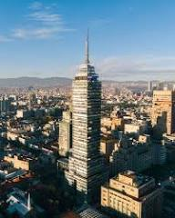
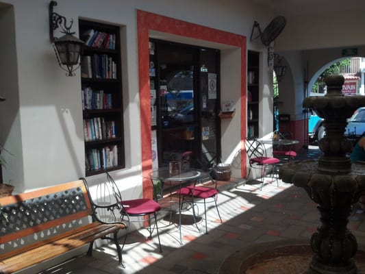
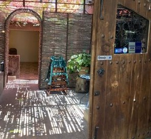
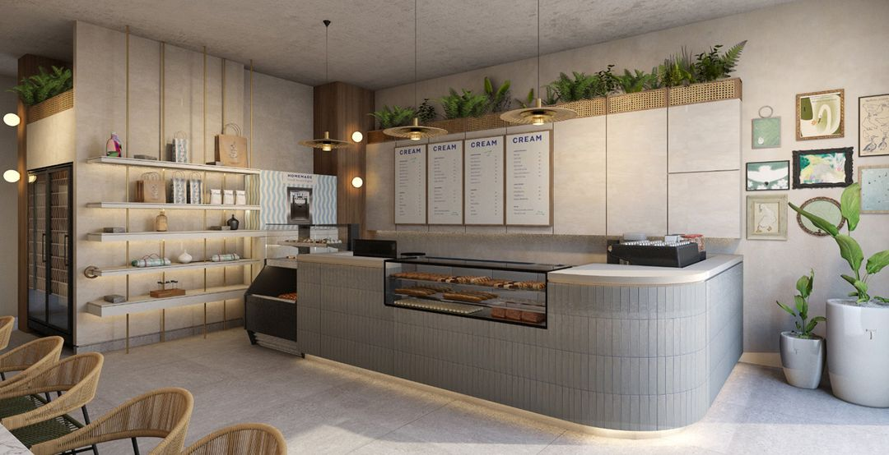

Why Cabo?
Cabo San Lucas and San José del Cabo are the two distinct cities that make up the Los Cabos region at the southern tip of Mexico's Baja California Peninsula.
Cabo San Lucas: The High-Energy Hub Often referred to simply as "Cabo," this resort city is the primary destination for nightlife and water-based adventure. It is built around a busy marina and is famous for its proximity to iconic landmarks.
San Jose del Cabo: The Authentic Retreat Located to the east, San José del Cabo is known for its colonial charm and relaxed pace. It is closer to the international airport (SJD) and serves as the region's cultural center.
CAFES
My favorite cafes in Cabo

Cabo Cafe
Our first coffee shop is located in the heart of Cabo San Lucas, inside a small plaza called "Plaza Cota." It is a very relaxed environment where you can read a book or simply enjoy a good cup of coffee.
Address:
Ave. Lázaro Cardenas entre Hidalgo y Guerrero Interior Plaza Cota Cabo San Lucas, México
What I like about it
We had the "chai en las rocas" and it was great! I would recommend the spicy or half spicy half sweet. It was located in a cute little courtyard that was nice and peaceful. The workers were very friendly and sweet. I would go there again in a heartbeat!!

Casasola Cafe & Brunch
We know how important it is to start the day with a delicious breakfast, but also how important it is to do so in a pleasant, fresh place with a great service atmosphere.
Address:
Miguel Hidalgo S/N 23450 Cabo San Lucas, Baja California Sur Mexico
What I like about it
The food here is delicious, the portions are quite large and we were very full. The space is beautiful and airy.

Cabo Cafe
Everything here is designed to be enjoyed together: an espresso that sparks conversation, a freshly baked pizza that brings the table together, a cocktail that celebrates moments both big and small. Cream is fresh, bold, and modern, yet at the same time, warm, familiar, and authentic.
Address:
Cabo del Sol, Corredor Turístico Los Cabos, 23455, Baja California Sur, México
What I like about it
Adorable pastry cafe with crepes and pizza if you're craving a bit more than a croissant. Wonderful staff, great for both indoor and outdoor seating with gorgeous flowery landscaping. The vibe is a blend of Mexico and France with a cute goose mascot. I would recommend the Special crepe that has Gouda cheese, ham and strawberry, with chipotle sauce it was excellent.